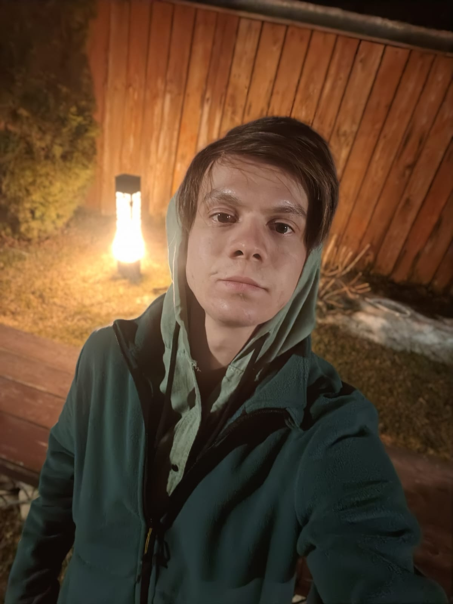
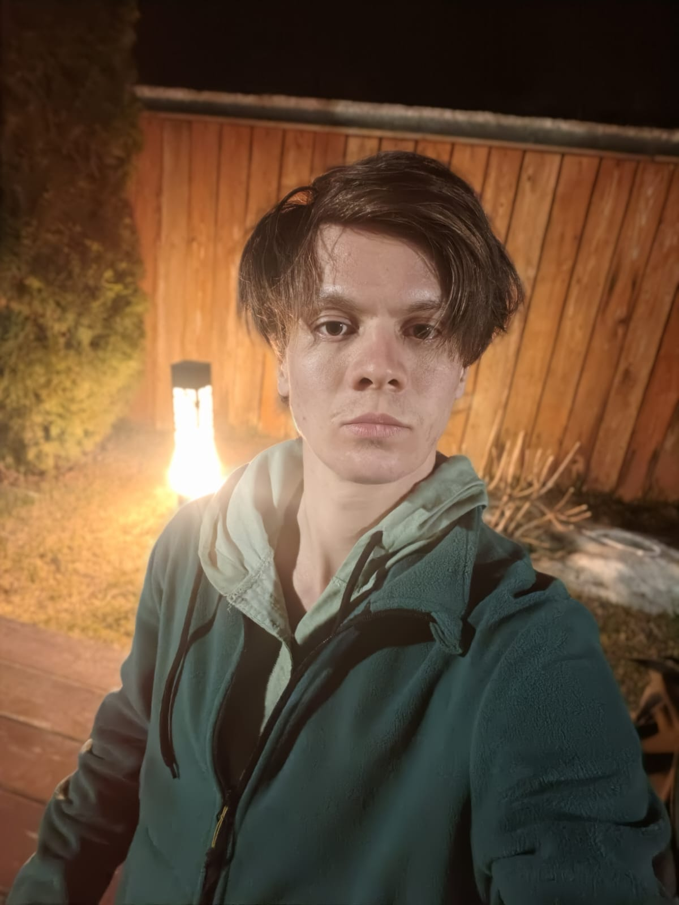

Ссылка на веб-сайт
Перейти к разделу 1Today I want to tell you about the trip that happened last year. On my birthday I
decided to travel to Issyk-Kul lake to have a great time.
I bought the bus ticket and booked the hotel room at Cholpon-Ata and headed on August 23rd.
I've had some difficulties in the beginning
but fortunately I did everything I wanted to.
What was new about that trip is that I tried diving for the first time in my life. It was scary but cool
at the same time. Also I was swimming,
running and playing basketball.
One of the best memories for me was running along the beach listening my favorite songs when the sun was
going down.
Honestly that was the best birthday in my life so far. I am sure I will come back there in some time.
It is been a long journey
What I did was incredible, it was like a marathon
that I've never run
It was a journey along the beach that I had last summer. I was
running along Issyk-Kul
for like one day.
I was extremely tired and exhausted at the end but I made that happen.
Today I want to tell you about the trip that happened a few years ago. In 2023 I
decided to travel to America to study and play basketball.
I found the college, bought the ticket and headed in the beginning of the year.
I've had some difficulties at the start but fortunately I did
many things I wanted to.
What was special about that trip is that I have seen Michael Jordan's statue for the first time in my life.
It was scary but cool
at the same time.
Also I was playing basketball, travelling and meeting new people.
One of the best memories for me
was running across the town listening my favorite songs when the sun was
going down.
Honestly that was one of the best journeys in my life so far. I am sure I will come back there in some time.
It is been a tough journey.
What I did was incredible. It was like a marathon that I've never run.
It was a journey along the beach that I had last summer. I was
running along Issyk-Kul
for like one day. I was extremely tired and exhausted but at the end
but I made that happen.


